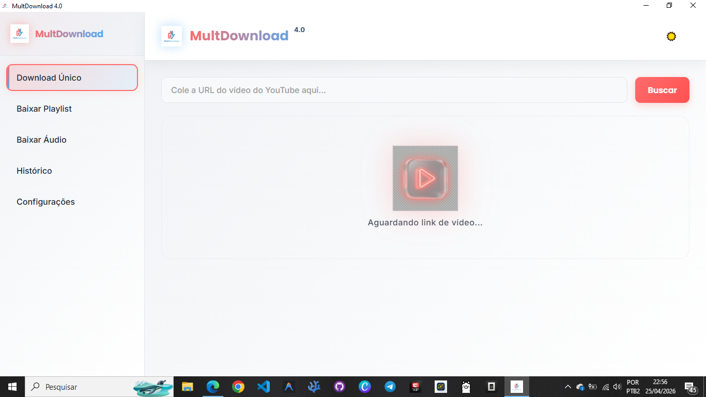

Qualidade máxima,
sem complicações.
O MultDownload 4.0 é a ferramenta definitiva para baixar mídias do YouTube. De MP3s a vídeos em 8K, tenha tudo em seu desktop com um clique.

Poder e Versatilidade
Tudo o que você precisa para gerenciar seus downloads de mídia.
Vídeos em Ultra HD
Suporte total para resoluções de 360p até 8K (Ultra HD) nos formatos MP4 e WebM.
Áudio Profissional
Extraia áudio diretamente para MP3 ou M4A com qualidade de até 320kbps.
Playlists Completas
Baixe listas de reprodução inteiras de forma inteligente com um único comando.
Preview Instantâneo
Veja a thumbnail, título e duração do conteúdo antes mesmo de iniciar o download.
Histórico Organizado
Mantenha um registro completo de todos os seus downloads para acesso rápido.
Motor Sempre Pronto
Atualização automática do yt-dlp integrada para garantir que o app nunca pare de funcionar.
Arquitetura de Ponta
Tecnologias robustas para garantir a melhor experiência.
Electron.js
yt-dlp
FFmpeg
Electron Store
Pronto para baixar?
Leve a potência do MultDownload para o seu desktop.